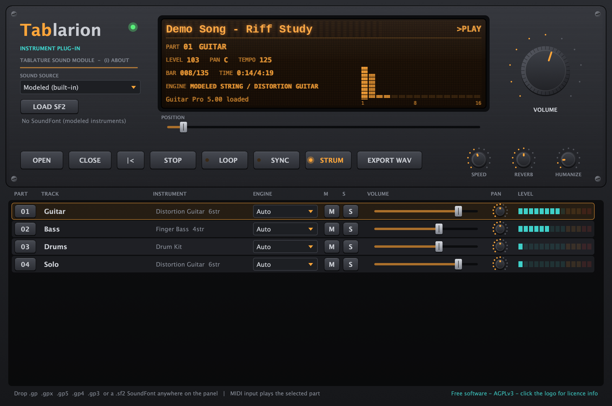

Guitar Pro 악보를
그대로 연주하는 악기
Your Guitar Pro tabs,
played for real
Tablarion은 Guitar Pro 파일을 열어 해머링·슬라이드·벤딩·하모닉스 같은 주법까지 해석해 연주하는 무료 가상 악기입니다. 모든 소리는 샘플 없이 코드로 합성됩니다. Tablarion is a free virtual instrument that opens Guitar Pro files and plays them with an articulation-aware engine — hammer-ons, slides, bends, harmonics and more. Every sound is synthesised in code; no samples are shipped.

주요 기능Features
악보를 MIDI처럼 단순 재생하지 않고, 기타리스트가 연주하듯 주법을 해석합니다.It doesn't just play notes like MIDI — it interprets the score the way a guitarist would.
GP3 ~ GP8 파일 지원GP3 – GP8 files
.gp, .gpx, .gp5, .gp4, .gp3 파일을 독자적인 구현으로 읽습니다. 끌어다 놓거나 OPEN으로 엽니다.Reads .gp, .gpx, .gp5, .gp4 and .gp3 with an independent implementation. Drag and drop, or click OPEN.
주법 해석 엔진Articulation engine
반복·도돌이표, 템포 맵, 해머링/풀링, 슬라이드, 벤딩, 비브라토, 하모닉스, 트릴, 트레몰로, 스트로크, 스윙, 휴머나이즈.Repeats and endings, tempo map, hammer-on/pull-off, slides, bends, vibrato, harmonics, trills, tremolo picking, strumming, swing, humanize.
물리 모델링 현악기Physically modelled strings
이중 편광 웨이브가이드로 줄마다 독립 보이스를 만들고 팜뮤트·데드노트·픽업 위치까지 표현합니다.Dual-polarisation waveguide with a voice per string, palm mute, dead notes and pickup-position comb.
밴드 전체 사운드The whole band
모달 피아노, FM 일렉트릭 피아노, 드로바 오르간, 현·관악 앙상블, 신스, 합성 GM 드럼킷.Modal piano, FM e-piano, drawbar organ, string and brass ensembles, synths and a synthesised GM drum kit.
SoundFont 하이브리드SoundFont hybrid
SF2 뱅크를 불러와 드럼·건반·오케스트라 파트에만 쓰고, 기타·베이스는 모델링 엔진을 유지할 수 있습니다.Load an SF2 bank for drums, keys and orchestral parts while guitars and basses stay on the modelled engine.
DAW 연동 & WAV 내보내기DAW sync & WAV export
SYNC로 DAW 트랜스포트·템포를 따라가고, MIDI 입력으로 파트를 직접 연주하며, 곡 전체를 24-bit WAV로 렌더링합니다.SYNC follows the DAW transport and tempo, MIDI input plays any part, and EXPORT WAV renders the song to 24-bit WAV.
설치Installation
macOS 12 Monterey 이상이 필요합니다. 하나의 유니버설 바이너리로 Apple Silicon과 Intel Mac에서 모두 네이티브로 실행됩니다.Requires macOS 12 Monterey or later. One universal binary runs natively on both Apple Silicon and Intel Macs.
-
릴리스 다운로드Download the release
Releases 페이지에서
Tablarion-macOS.zip을 받아 압축을 풉니다. 위의 macOS용 다운로드 버튼은 이 파일을 바로 받습니다.DownloadTablarion-macOS.zipfrom the Releases page and unzip it. The Download for macOS button above fetches this file directly. -
플러그인 복사Copy the plug-ins
쓰는 DAW에 맞는 파일만 복사해도 됩니다. Finder에서 ⌘⇧G로 폴더를 열 수 있습니다.Copy only the formats your DAW uses. In Finder, press ⌘⇧G to open a folder by path.
파일File 복사할 위치Copy to Tablarion.vst3~/Library/Audio/Plug-Ins/VST3Tablarion.component~/Library/Audio/Plug-Ins/Components(Logic, GarageBand)(Logic, GarageBand)Tablarion.app/Applications(DAW 없이 단독 실행)(runs without a DAW) -
macOS 보안 경고 해제Clear the macOS quarantine flag
공증(notarize)되지 않은 빌드라면 macOS가 "손상되었거나 확인할 수 없는 개발자" 경고를 띄웁니다. 터미널에서 아래 명령으로 해제하세요.If the build isn't notarised, macOS reports it as damaged or from an unidentified developer. Clear the flag in Terminal:
xattr -dr com.apple.quarantine ~/Library/Audio/Plug-Ins/VST3/"Tablarion.vst3" xattr -dr com.apple.quarantine ~/Library/Audio/Plug-Ins/Components/"Tablarion.component" xattr -dr com.apple.quarantine /Applications/"Tablarion.app" -
DAW에서 다시 스캔Rescan in your DAW
DAW를 재시작하거나 플러그인을 다시 스캔한 뒤 악기(Instrument) 트랙에 Tablarion을 올립니다. AU가 안 보이면 아래 명령으로 검증해 보세요.Restart or rescan, then insert Tablarion on an instrument track. If the AU doesn't show up, validate it:
auval -v aumu Tbln Tblr
사용법Usage
악보 파일을 패널에 끌어다 놓고 PLAY를 누르면 됩니다.Drop a score on the panel and press PLAY.
| 컨트롤Control | 설명What it does |
|---|---|
OPEN | Guitar Pro 파일 열기 (패널 아무 곳에나 드래그 앤 드롭도 가능)Open a Guitar Pro file (or drop it anywhere on the panel) |
CLOSE | 열린 악보를 닫고 빈 상태로 돌아갑니다. 불러온 SoundFont와 설정은 유지됩니다Close the current score and return to the empty state; the loaded SoundFont and settings are kept |
|< | 곡의 처음으로 돌아가기Return to the start |
PLAY / STOP | 재생 / 정지 (내부 트랜스포트)Start / stop playback (internal transport) |
LOOP | 곡 반복 재생Loop the song |
POSITION | 재생 위치(마디) 이동Jump to a bar |
SPEED | 재생 속도 25–200% — 연습할 때 유용. 더블클릭하면 100%로 돌아갑니다Playback speed 25–200% — handy for practice. Double-click to reset to 100% |
SYNC | DAW 트랜스포트·템포를 따라감 (곡의 1마디 = DAW 1마디)Follow DAW transport and tempo (song bar 1 = DAW bar 1) |
STRUM | 기타 코드를 실제로 긁듯이 줄마다 시차를 두고 연주 (자연스러운 스트로크) 켜기/끄기Toggle natural strumming: guitar chords are played string by string like a real strum |
VOLUME · REVERB · HUMANIZE | 전체 음량, 홀 리버브 양, 타이밍·세기 인간미Master level, hall reverb amount, timing/velocity humanize |
PART | 파트 행을 클릭하면 MIDI 입력이 그 트랙의 악기로 연주됩니다Click a part row and MIDI input plays that track's instrument |
M · S · VOLUME · PAN | 트랙별 뮤트, 솔로, 음량, 팬Per-track mute, solo, level and pan |
ENGINE | 트랙별 음원: Auto / Modeled / SoundFontPer-track source: Auto / Modeled / SoundFont |
SOUND SOURCE | 전체 음원: Modeled(내장) / SoundFont / HybridGlobal source: Modeled (built-in) / SoundFont / Hybrid |
EXPORT WAV | 곡 전체를 24-bit WAV로 렌더링Render the whole song to a 24-bit WAV |
LOAD SF2 | SoundFont 메뉴: 불러오기, 아래 폴더에 있는 뱅크 바로 선택, 해제. .sf2 파일을 패널에 끌어다 놓아도 불러옵니다SoundFont menu: load, pick a bank from the folders below, unload. You can also drop a .sf2 onto the panel |
(i) ABOUT | 왼쪽 위 로고 영역을 클릭하면 버전, 라이선스, 소스 코드 주소, 상표 고지를 보여 줍니다Click the logo area (top left) for version, licence, source-code address and trademark notices |
SoundFont 사용하기Using SoundFonts
LOAD SF2 버튼의 Load SoundFont (.sf2)…로 뱅크를 불러온 뒤 SOUND SOURCE를 Hybrid로 두면, 주법 표현이 뛰어난 모델링 기타·베이스는 그대로 두고 드럼·건반·오케스트라만 SoundFont로 연주합니다. 트랙의 ENGINE 설정으로 개별 지정할 수도 있습니다.Load a bank with LOAD SF2 → Load SoundFont (.sf2)… and set SOUND SOURCE to Hybrid: the modelled guitars and basses, which handle techniques best, stay put while drums, keys and orchestral parts use the SoundFont. Each track's ENGINE setting can override this.
자동 로드Auto-load
아래 폴더에 .sf2를 넣어 두면 시작할 때 첫 번째 뱅크를 자동으로 불러오고 SOUND SOURCE가 Hybrid로 설정됩니다. 폴더가 비어 있으면 아무것도 불러오지 않습니다.Put a .sf2 in this folder and the first bank loads on start-up with SOUND SOURCE set to Hybrid. Nothing loads if the folder is empty.
~/Library/Application Support/Tablarion/SoundFontsLOAD SF2 메뉴에는 다음 폴더의 뱅크도 바로 나타납니다.The LOAD SF2 menu also lists banks from these folders.
~/Documents/Tablarion/SoundFonts
~/Library/Audio/Sounds/Banks
/Library/Audio/Sounds/BanksTablarion GM SoundFont (선택 사항)Tablarion GM SoundFont (optional)
Tablarion의 모델링 악기를 직접 렌더링해 만든 General MIDI 뱅크입니다. 128개 GM 악기(뱅크 0)와 GM 드럼킷(뱅크 128)이 들어 있으며, 제3자 샘플은 전혀 쓰지 않았습니다. 기타·베이스는 앰프를 거치지 않은 원음(dry)으로 담겨 있어 Tablarion이 자체 앰프·캐비닛 체인을 덧입히고, 28번(뮤트 기타)·31번(기타 하모닉스)은 데드노트·하모닉스 주법용으로 쓰입니다. 용량이 커서(약 640 MB) 플러그인과 따로 받습니다. 받은 파일을 위의 자동 로드 폴더에 넣으면 됩니다. 이 뱅크도 AGPL-3.0-or-later로 배포되며, 이 뱅크로 만든 음악은 만든 사람의 것입니다.A General MIDI bank rendered from Tablarion's own modelled instruments: all 128 GM programs (bank 0) and a GM drum kit (bank 128), with no third-party samples. Guitars and basses are dry so Tablarion can add its own amp and cabinet chain; programs 28 (muted guitar) and 31 (guitar harmonics) double as dead-note and harmonic articulation layers. Because it's large (about 640 MB) it is a separate download — drop it into the auto-load folder above. The bank is also distributed under the AGPL-3.0-or-later; music you make with it is yours.
엔진 구성Engine overview
JUCE 8 기반 C++17로 작성되었습니다.Written in C++17 on JUCE 8.
| 계층Layer | 구현Implementation |
|---|---|
Readers | GP3/4/5 binary, GP6 BCFZ/BCFS container, GP7/8 zip + GPIF XML |
Conductor | 반복·다른 엔딩, 템포 맵, 타이, 렛 링, 해머링/풀링, 레가토·시프트 슬라이드, 슬라이드 인/아웃, 벤딩, 와미, 비브라토, 내추럴/인공/핀치/태핑 하모닉스, 트릴, 트레몰로 피킹, 꾸밈음, 브러시, 아르페지오·라스게아도, 스트로크, 스윙, 휴머나이즈Repeats and alternate endings, tempo map, ties, let ring, hammer-on/pull-off, legato and shift slides, slide in/out, bends, whammy, vibrato, natural/artificial/pinch/tapped harmonics, trills, tremolo picking, grace notes, brush, arpeggio and rasgueado, strumming, swing, humanize |
Strings | 이중 편광 웨이브가이드: 라그랑주 분수 지연, 위상 보정 분산 올패스, 주파수 의존 감쇠, 팜뮤트, 데드노트, 픽업 위치 콤Dual-polarisation waveguide: Lagrange fractional delay, dispersion allpass with phase compensation, frequency-dependent decay, palm mute, dead notes, pickup-position comb |
Keys | 비조화 배음 모달 피아노, FM 타인 일렉트릭 피아노, 드로바 오르간, 모달 말렛Modal piano with inharmonic partials and double-string beating, FM tine e-piano, drawbar organ, modal mallets |
Others | VA 앙상블(스트링, 브라스, 리드, 플루트, 콰이어, 패드, 리드 신스, 신스 베이스), 하이햇 초크가 있는 합성 GM 드럼킷VA ensembles (strings, brass, reeds, flute, choir, pads, leads, synth bass), synthesised GM drum kit with hi-hat choke |
SoundFont 2 | 전체 제너레이터 모델, DAHDSR 엔벨로프, 필터, LFO, 루프, 익스클루시브 클래스, 기타 주법Full generator model, DAHDSR envelopes, filter, LFOs, loops, exclusive classes, guitar articulations |
FX | 4배 오버샘플링 앰프 시뮬(클린/재즈/크런치/하이게인/베이스)과 캐비닛, 어쿠스틱 바디 공명, 코러스, 컴프레서, FDN 홀 리버브, 글루 컴프레서, 룩어헤드 리미터4× oversampled amp sims (clean/jazz/crunch/high-gain/bass) with cabinet, acoustic body resonator, chorus, compressors, FDN hall reverb, glue compressor, look-ahead limiter |
소스에서 빌드Build from source
Xcode와 CMake가 필요합니다. setup.sh가 JUCE 8.0.9를 받아 Xcode 프로젝트를 만듭니다.Requires Xcode and CMake. setup.sh fetches JUCE 8.0.9 and generates the Xcode project.
# once
brew install cmake
git clone https://github.com/jayusop/Tablarion-source.git
cd Tablarion-source
# universal Release build (Apple Silicon + Intel) from the command line
./build_universal.sh -DTABLARION_SOURCE_URL=https://github.com/jayusop/Tablarion-source
# or work in Xcode
open build/Tablarion.xcodeprojbuild_universal.sh는 Xcode 프로젝트가 없으면 setup.sh로 만든 뒤 Tablarion_All 스킴을 Release로 빌드하고, 결과물이 arm64·x86_64 두 아키텍처를 모두 담았는지 lipo로 확인합니다. 빌드된 플러그인은 ~/Library/Audio/Plug-Ins에 자동 복사되고, 결과물은 build/Tablarion_artefacts/Release에 생깁니다.build_universal.sh runs setup.sh if there is no Xcode project yet, builds the Tablarion_All scheme in Release and checks with lipo that the binaries contain both arm64 and x86_64. The plug-ins are copied to ~/Library/Audio/Plug-Ins; outputs land in build/Tablarion_artefacts/Release.
- 빌드는 기본이 유니버설입니다. Xcode에서는 실행 대상을 Any Mac (Apple Silicon, Intel)로 고르거나 Product › Archive를 쓰세요. My Mac으로 두면 지금 Mac의 아키텍처만 빌드됩니다.Builds are universal by default. In Xcode, pick the run destination Any Mac (Apple Silicon, Intel) or use Product › Archive; with My Mac only your Mac's own architecture is built.
- 개발 중 빠른 네이티브 빌드:
./setup.sh -DTABLARION_UNIVERSAL=OFFQuicker native-only development build:./setup.sh -DTABLARION_UNIVERSAL=OFF build/가 이미 있으면build_universal.sh에 준 옵션은 적용되지 않습니다. 소스 URL 등 옵션을 바꿀 때는rm -rf build후 다시 실행하세요.Ifbuild/already exists, options passed tobuild_universal.share ignored; runrm -rf buildfirst when changing options such as the source URL.
개발자 도구Developer tools
cmake -B build-cli -DTABLARION_BUILD_TOOLS=ON
cmake --build build-cli --config Release
ScoreTest <file|dir> # parser regression test
RenderTest <score> <out.wav> [sec] [sf2] # offline render + timing/level report
UISnapshot <score> <out.png> # render the editor to an image
SF2Builder <out.sf2> [--bake-guitar-fx] [--rate 44100] [--step N]
# render the modelled instruments into a GM .sf2FAQ
"손상되었기 때문에 열 수 없습니다"라고 나와요.macOS says the plug-in "is damaged and can't be opened".
DAW에서 플러그인이 보이지 않아요.My DAW doesn't list the plug-in.
~/Library) 아래 올바른 폴더에 있는지 확인하고 플러그인을 다시 스캔하세요. Logic·GarageBand는 AU(.component)만, Ableton Live·Cubase·Reaper·Bitwig 등은 VST3도 사용합니다.Check the files are in the right folders under your user Library (~/Library) and rescan. Logic and GarageBand use AU (.component) only; Live, Cubase, Reaper, Bitwig and others also load VST3.Guitar Pro가 설치되어 있어야 하나요?Do I need Guitar Pro installed?
SoundFont는 어디서 구하나요?Where do I get SoundFonts?
.sf2 뱅크도 쓸 수 있습니다. 다른 뱅크는 각자의 라이선스를 따르니 배포·상업적 이용 조건을 확인하세요. SoundFont 없이도 내장 모델링 엔진으로 모든 파트가 연주됩니다.Get the Tablarion GM SoundFont from Releases, or use any other GM-compatible .sf2 bank (check its own licence). Without one, the built-in modelled engine plays every part.상업적으로 써도 되나요?Can I use it commercially?
라이선스Licence
무료로 쓰고, 무료로 나눌 수 있습니다. 대신 소스는 항상 공개됩니다.Free to use and free to share — with the source always open.
AGPL-3.0-or-later
Tablarion 전체는 GNU Affero GPL v3 이상으로 배포됩니다. 비용·계약 없이 받아서 쓰고, 고치고, 나눌 수 있습니다.The whole of Tablarion is under the GNU Affero GPL v3 or later. Get it, use it, change it and share it with no fee and no contract.
만든 음악은 여러분의 것Your music is yours
플러그인으로 연주·렌더링한 오디오에는 아무 라이선스 의무가 없습니다. 상업 음반·영상·방송에도 자유롭게 쓰세요.Audio you play or render with it carries no licence obligations. Use it freely in commercial releases, video and broadcast.
재배포·수정 조건Redistributing or modifying
바이너리를 다시 배포하면 전체 소스와 라이선스 파일을 함께 제공해야 하고, 수정본은 AGPLv3를 유지하며 수정 사실을 밝혀야 합니다.Redistributing binaries means providing the full source and licence files; modified versions stay under the AGPLv3 and must say they were modified.
제3자 소프트웨어Third-party software
JUCE와 Steinberg VST3 SDK는 "오픈소스" 또는 "상용" 라이선스 중 하나를 고르도록 되어 있고, 이 프로젝트는 무료 공개를 위해 오픈소스 쪽(JUCE: AGPLv3, VST3 SDK: GPLv3)을 택했습니다. 두 라이선스는 결합이 허용되며(각 13조) 결합된 프로그램은 AGPLv3를 따릅니다. 나머지 구성 요소는 모두 자유로운 허용형(permissive) 라이선스입니다.JUCE and the Steinberg VST3 SDK each offer an open-source or a commercial licence; for free distribution this project uses the open-source options (JUCE: AGPLv3, VST3 SDK: GPLv3). They may be combined (§13 of each) and the combined program is under the AGPLv3. Every other component uses a permissive licence.
| 구성 요소Component | 라이선스Licence | 용도Used for |
|---|---|---|
| JUCE 8.0.9 | AGPLv3 (선택)(option chosen) | GUI·오디오·플러그인 프레임워크GUI, audio and plug-in framework |
| Steinberg VST3 SDK 3.7.12 | GPLv3 (선택)(option chosen) | VST3 플러그인 형식VST3 plug-in format |
| Apple AudioUnitSDK | Apache 2.0 | AU 플러그인 형식AU plug-in format |
| zlib | zlib | .gp(zip) 압축 해제Decompressing .gp (zip) |
| libpng | libpng | PNG 이미지PNG images |
| IJG libjpeg | IJG | JPEG 이미지JPEG images |
| FLAC · Ogg Vorbis | BSD 3-Clause | 오디오 형식 지원Audio format support |
| HarfBuzz | Old MIT | 텍스트 셰이핑Text shaping |
| SheenBidi | Apache 2.0 | 양방향 텍스트Bidirectional text |
This software is based in part on the work of the Independent JPEG Group.
라이선스 상세·전문 보기Full licence details and texts THIRD_PARTY_LICENSES.txt · LICENSE · THIRD_PARTY_NOTICES.md
소리·콘텐츠·상표Sounds, content and trademarks
모든 악기 소리는 원본 코드로 실시간 합성되며 플러그인에는 샘플이나 사운드 뱅크가 들어 있지 않습니다. 따로 받는 Tablarion GM SoundFont도 같은 코드로 렌더링한 자체 제작물이며 AGPL-3.0-or-later로 배포됩니다. 사용자가 불러온 SoundFont는 각 뱅크의 라이선스를 따릅니다. Guitar Pro 파일은 독자적인 구현으로 읽으며 Guitar Pro 소프트웨어·코드·사운드는 포함되지 않습니다.Every instrument sound is synthesised in real time by original code; the plug-in contains no samples or sound banks. The separately downloadable Tablarion GM SoundFont is rendered by the same code and is also under the AGPL-3.0-or-later. SoundFonts you load are covered by their own licences. Guitar Pro files are read by an independent implementation; no Guitar Pro software, code or sounds are included.
VST는 Steinberg Media Technologies GmbH의 등록 상표입니다. Audio Units와 macOS는 Apple Inc.의 상표입니다. Guitar Pro는 Arobas Music의 상표입니다. SoundFont는 Creative Technology Ltd.의 등록 상표입니다. 이 이름들은 호환성을 설명하기 위해서만 쓰이며, Tablarion는 이들 회사와 제휴하거나 보증받지 않은 독립 프로젝트입니다.VST is a registered trademark of Steinberg Media Technologies GmbH. Audio Units and macOS are trademarks of Apple Inc. Guitar Pro is a trademark of Arobas Music. SoundFont is a registered trademark of Creative Technology Ltd. These names describe compatibility only; Tablarion is an independent project, not affiliated with or endorsed by these companies.